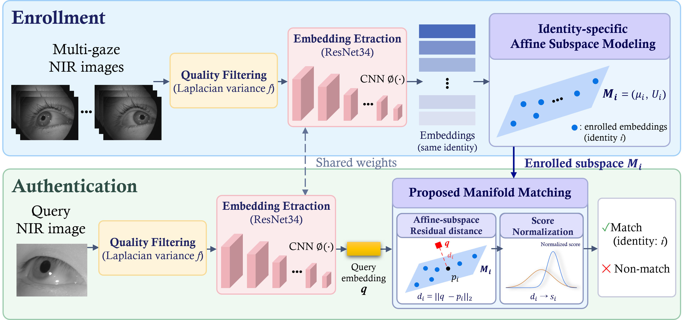
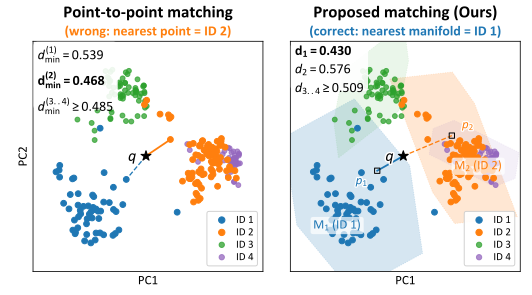

Electronics and Telecommunications Research Institute (ETRI), Daejeon, Republic of Korea
★Equal contribution †Corresponding author

Recent deep learning-based iris recognition methods encode iris images as high-dimensional embeddings and typically authenticate a query by directly comparing it with enrollment embeddings using point-to-point matching. Under off-angle acquisition, however, gaze-induced appearance changes introduce substantial intra-class variation, separating embeddings of the same identity and degrading recognition performance.
To address this challenge, we propose GazeMM, an identity-specific gaze manifold-based iris matching framework that explicitly models such gaze-induced variation. Given multi-view enrollment embeddings, GazeMM constructs a low-dimensional affine subspace for each identity and matches a query by orthogonal residual distance, followed by cohort-based score normalization. Experimental results show that GazeMM achieves an average equal error rate of 0.30% under off-angle conditions, while maintaining competitive performance under frontal acquisition. Moreover, GazeMM remains effective across different iris feature extractors, demonstrating the generality of the proposed matching strategy.
GazeMM changes the matching stage, not the feature extractor. Gaze-induced intra-class variation does not scatter isotropically — it concentrates along a handful of directions in the embedding space. Enrollment therefore collapses an identity's multi-gaze embeddings into an affine subspace $M_i = (\mu_i, U_i)$, and a query is scored by the part of $q - \mu_i$ that those learned directions cannot explain. Variation that merely slides the query along the gaze manifold costs nothing.
$$d_i \;=\; \big\lVert (\mathbf{I}_D - U_iU_i^{\top})(q-\mu_i) \big\rVert_2$$
A final cohort-based normalization rescales the residual so that one global threshold works across queries and identities.

Averaged over four off-angle and eight frontal datasets (%), with subject-disjoint 2-fold cross-validation over three fixed seeds. Bold and underlined denote best and second best. Per-dataset breakdowns, the generality study and the ablation are in the supplementary PDF.
| Method | Off-angle (avg.) | Frontal (avg.) | ||||||
|---|---|---|---|---|---|---|---|---|
| EER | FRR | Rank-1 | FTE | EER | FRR | Rank-1 | FTE | |
| Classical | ||||||||
| WAHET | 35.83 | 95.28 | 10.60 | 0.0 | 9.29 | 33.02 | 90.18 | 0.0 |
| USITv3 | 33.24 | 81.71 | 50.11 | 0.0 | 11.13 | 20.22 | 87.35 | 0.0 |
| OSIRIS | 24.18 | 82.93 | 62.07 | 9.7 | 4.62 | 11.67 | 97.45 | 1.4 |
| Hybrid | ||||||||
| HDBIF | 26.26 | 68.27 | 77.06 | 0.0 | 1.41 | 2.89 | 99.78 | 0.0 |
| WCI | 7.10 | 45.71 | 87.08 | 39.6 | 0.18 | 0.22 | 99.94 | 16.6 |
| Deep learning | ||||||||
| DGR | 17.64 | 72.60 | 83.96 | 20.5 | 3.19 | 12.26 | 99.24 | 1.5 |
| UE-UGCL | 11.98 | 66.30 | 84.10 | 20.5 | 10.49 | 51.00 | 89.96 | 1.5 |
| Maxout-BA | 22.13 | 81.14 | 79.29 | 20.5 | 15.90 | 66.06 | 82.70 | 1.5 |
| ArcIris | 16.52 | 59.43 | 83.98 | 1.2 | 0.65 | 1.17 | 99.85 | 0.0 |
| TripletIris | 15.63 | 82.14 | 81.96 | 0.0 | 0.83 | 3.15 | 99.80 | 0.0 |
| GazeMM (Ours) | 0.30 | 9.49 | 89.40 | 2.8 | 0.37 | 1.95 | 99.85 | 2.7 |
Samples that fail to enroll are excluded from the matching pool, so methods with a high FTE may look optimistic — WCI, the strongest off-angle baseline, discards 39.6% of samples against GazeMM's 2.8%.
The paper is currently under review. A citation entry will be provided here upon acceptance.